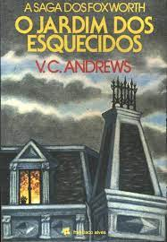
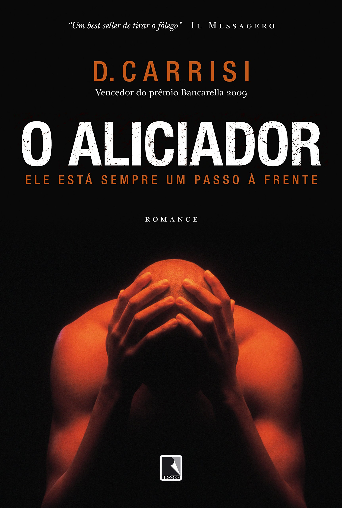

Estante de Livros
Sua biblioteca à um clique de distância!
A Casa da Floresta
Sinopse
As origens de Avalon reveladas em mais um best-seller de Marion Zimmer Bradley As brumas de Avalon, clássica releitura do mito arturiano sob a perspectiva feminina, é a obra-prima da autora Marion Zimmer Bradley. Ao longo dos anos após a escrita do primeiro volume, Bradley se dedicou aos demais romances do chamado Ciclo de Avalon, do qual A Casa da Floresta foi o segundo título a ser publicado. Nos primeiros anos do Império Romano nos territórios da Britânia, os druidas e sua religião seguem duramente massacrados e perseguidos pelas legiões de César. Após a destruição da Casa das Mulheres na sagrada ilha de Mona, as sacerdotisas, que juraram proteger os ritos ancestrais de sabedoria, cura e magia consagrados à Deusa, buscam refúgio em um novo santuário: a Casa da Floresta. Mas o amor não obedece às leis dos homens, e Eilan, futura grã-sacerdotisa, se apaixona por um oficial do exército romano. E no coração desse romance proibido, entre o chamado e a paixão, entre a delicadeza do cisne e a força da águia, está a história da formação da lendária ilha de Avalon. "Bradley faz um trabalho de mestre ao recriar os sabores de uma época e de duas culturas tão distintas, sempre com protagonistas femininas fortes. [...] O amor proibido entre uma sacerdotisa e um soldado romano funciona como espelho do choque entre culturas na Britânia romana."
Fonte: Google Books
| Data da Primeira Publicação |
Autor(a) |
Idioma Original |
Gêneros |
| 01 de Abril de 1994 |
Marion Zimmer Bradley |
Inglês |
Literatura fantástica, Ficção histórica, Romance de amor |
O Senhor dos Anéis: A Sociedade do Anel

Sinopse
"O volume inicial de O Senhor dos Anéis, lançado originalmente em julho de 1954, foi o primeiro grande épico de fantasia moderno, conquistando milhões de leitores e se tornando o padrão de referência para todas as outras obras do gênero até hoje. A imaginação prodigiosa de J.R.R. Tolkien e seu conhecimento profundo das antigas mitologias da Europa permitiram que ele criasse um universo tão complexo e convincente quanto o mundo real. A Sociedade do Anel começa no Condado, a região rural do oeste da Terra-média onde vivem os diminutos e pacatos hobbits. Bilbo Bolseiro, um dos raros aventureiros desse povo, cujas peripécias foram contadas em O Hobbit, resolve ir embora do Condado e deixa sua considerável herança nas mãos de seu jovem parente Frodo. O mais importante legado de Bilbo é o anel mágico que costumava usar para se tornar invisível. No entanto, o mago Gandalf, companheiro de aventuras do velho hobbit, revela a Frodo que o objeto é o Um Anel, a raiz do poder demoníaco de Sauron, o Senhor Sombrio, que deseja escravizar todos os povos da Terra-média. A única maneira de eliminar a ameaça de Sauron é destruir o Um Anel nas entranhas da própria montanha de fogo onde foi forjado. A revelação faz com que Frodo e seus companheiros hobbits Sam, Merry e Pippin deixem a segurança do Condado e iniciem uma perigosa jornada rumo ao leste. Ao lado de representantes dos outros Povos Livres que resistem ao Senhor Sombrio, eles formam a Sociedade do Anel."
Fonte: Google Books
| Data da Primeira Publicação |
Autor(a) |
Idioma Original |
Gêneros |
| 29 de Julho de 1954 |
J. R. R. Tolkien |
Inglês |
Literatura fantástica |
O Jardim dos Esquecidos

Sinopse
Após a morte do pai, os irmãos Chris, Cath e os gêmeos Carrie e Cory são levados pela mãe, Corine, para o único lugar onde poderiam morar: a casa dos avós, conhecida como a mansão Foxworth Hall.
Enganadas achando que a nova vida seria cheia de luxos e sonhos realizados, as crianças não imaginavam que os avós as consideravam frutos do demônio. Também não sabiam que seus pais eram parentes de sangue, "tio e sobrinha", e que haviam cometido um pecado ao se casarem e terem filhos. Por isso que, segundo a avó, tais aberrações deveriam ser trancadas num pequeno quartinho na ala norte. Já no dia seguinte a chegada, Corine está no quarto olhando para o pai debilitado, quando sua mãe a chicoteia 17 vezes como castigo por seus dezessete anos de casada. A avó das crianças a obriga mostrar as marcas dos açoites, Corine diz aos filhos para procurarem por uma porta secreta que leva a um sótão enorme aonde podem brincar.
Certa noite, Chris e Cathy conseguem quebrar as grades da janela, mas o plano falha ao tentarem fugir os cães, que começam a latir. Assim, as quatro crianças permaneceram trancafiadas no sótão, sob vigilância da avó, crescendo no universo paralelo, Chris e Cathy passam a ser o mundo um do outro e também de seus "filhos novos", os gêmeos. Esquecidos pela mãe que vivia pelo mundo e os visitava cada vez menos. Com o tempo as crianças adoeceram e Cory morreu, logo elas descobriram que sua propria mãe as enveneneva. As crianças saem da mansão e vão embora.
Fonte: Google Books
| Data da Primeira Publicação |
Autor(a) |
Idioma Original |
Gêneros |
| Novembro de 1979 |
V.C. Andrews |
Inglês |
Literatura Gótica, Saga de Família. |
Doutor Sono

Sinopse
Na infância, Danny Torrance sobreviveu a uma tentativa de homicídio por parte do pai, um escritor perturbado pelos espíritos malignos do Hotel Overlook. Já adulto, traumatizado e alcoólatra. Danny se estabelece em uma pequena cidade, onde consegue um emprego no hospital local. Sua paz, porém, está com os dias contados a partir de quando cria um vínculo telepático com Abra, uma menina com poderes tão fortes quanto aqueles que ele bloqueia dentro de si."
Fonte: Google Books
| Data da Primeira Publicação |
Autor(a) |
Idioma Original |
Gêneros |
| 24 de Setembro de 2013 |
Stephen King |
Inglês |
Terror |
O Aliciador

Sinopse
Em seu romance de estréia, o escritor italiano Donato Carrisi surpreendeu e arrebatou a crítica e o público ao embrenhar-se por um gênero até então fortemente atribuído aos grandes escritores americanos. Presente nas listas de best sellers dos principais jornais da Itália logo em seu lançamento, com mais de 180 mil exemplares vendidos e publicado em nove países, O aliciador é mais que um thriller de um autor estreante que reinventa as regras do jogo: é uma história que não dá trégua, que explora a zona nebulosa entre o bem e o mal até descobrir seu último segredo, seu menor sussurro. O criminologista Goran Gavila e a equipe de homicídios enfrentam um caso perturbador, que exige toda a habilidade dos policiais do Esquadrão Especial: seis braços direitos são desenterrados em um bosque, cinco meninas entre 9 e 13 anos estão desaparecidas. Liderada por Gavila e pelo Capitão Roche, a equipe segue as pistas do caso e, um a um, os corpos das garotinhas emergem,deixando evidente que o culpado é um serial killer cuja frieza e ferocidade não têm limites. As esperanças de que uma sexta menina esteja viva provocam uma corrida contra o tempo, mas as pistas, em vez de levarem a equipe ao culpado, revelam-se parte de um plano friamente arquitetado pela mente cruel e brilhante do assassino, que parece estar sempre um passo à frente. Em cada cena de crime, novas evidências levam os detetives a acreditar que não se trata de apenas um, mas de vários assassinos, agindo em conjunto. É quando se junta a eles a investigadora Mila Vasquez, especialista em casos de sequestro.Aos poucos a polícia descobre que seu alvo é capaz de assumir as aparências mais variadas, colocando-os à prova incessantemente. Nesse caso, cada vez que o mal vem à luz, traz consigo um agouro, obrigando os detetives a enfrentar sobretudo a escuridão que carregam dentro de si. A investigação se transforma em um jogo de pesadelos habilmente velados, um desafio contínuo.
Fonte: Google Books
| Data da Primeira Publicação |
Autor(a) |
Idioma Original |
Gêneros |
| 2009 |
Donato Carrisi |
Italiano |
Thriller Criminal |